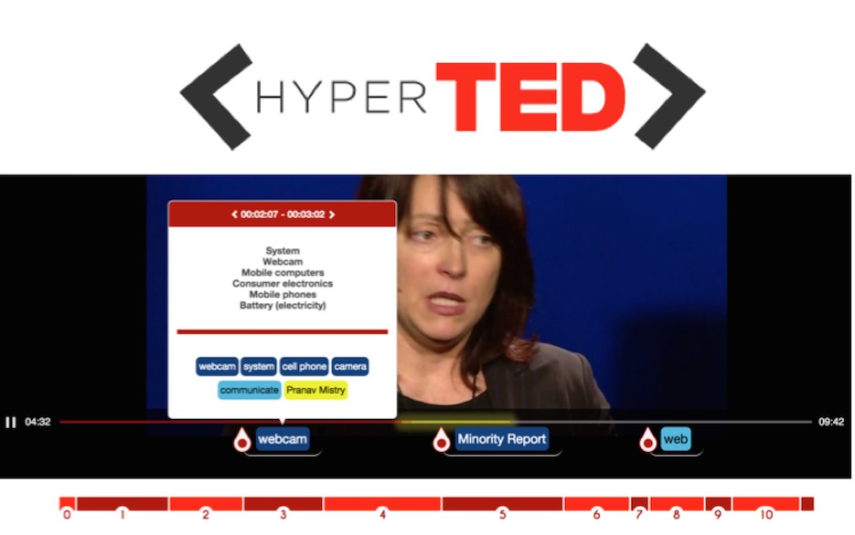
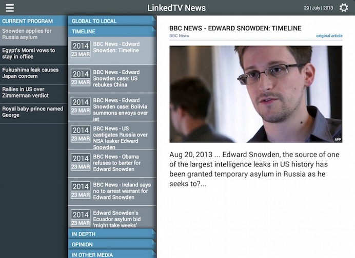
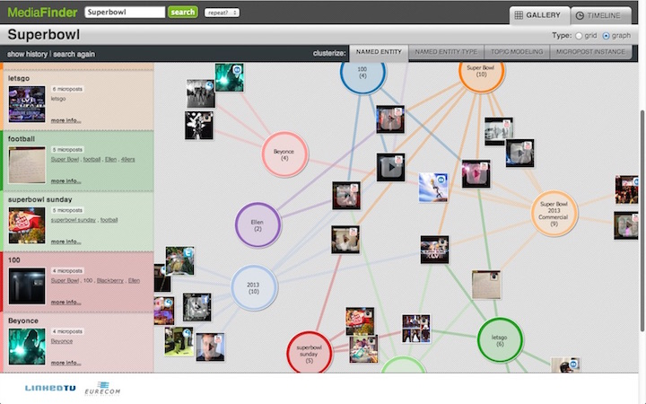

Portfolio
HyperTed
App
Code on Githup
An innovative way of consuming TED talks: target particular chapters, highlight key fragments, see important entities, and seamlessly jump to related resources on the Web like other chapters and educational courses.
Named Entity Expansion on News
App
Annotations on Githup
Helping the users to interpret international news via relevant entities playing a role in the depicted story.
Italian Elections 2013
App
Check Paper at LiME'13 (WWW'13)
A different way of reliving the 5 days after the 2013 Italian Elections. Check
MediaFinder
App
Check Paper at RAMSS'13 (WWW'13)
Reling on textual features in media items obtained from diferent social networks, we enrich and cluster them in order to generate storyboards that allow to explore facts happening on the world.